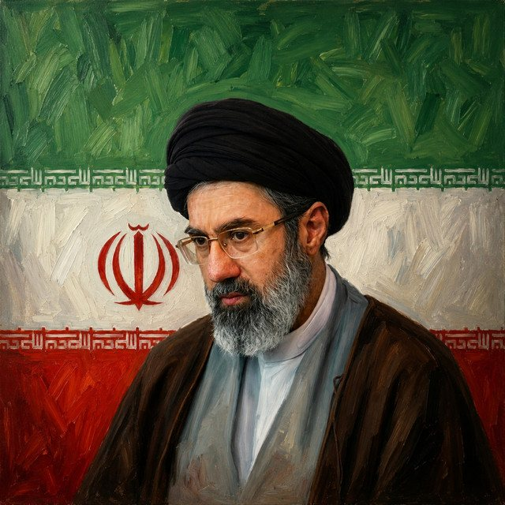

The Eclectic Polymath Podcast · Archive
#023 World Leaders: Mojtaba Khamenei and the Iranian Dynasty

About this episode
Welcome back to The Eclectic Polymath Podcast, a curiosity driven deep dive show built around the questions that pull us in.
Mojtaba Khamenei’s rise sits at the intersection of religion, family power, military loyalty, and the hidden machinery of the Iranian state.
Long seen as a behind the scenes gatekeeper, Mojtaba emerges here as a figure shaped by his father’s legacy, the Revolutionary Guards, the networks of the Iran Iraq War, and the uneasy question of what happens when a revolutionary system starts to look like hereditary rule.
Key points
- Welcome back to The Eclectic Polymath Podcast, a curiosity driven deep dive show built around the questions that pull us in.
- Mojtaba Khamenei’s rise sits at the intersection of religion, family power, military loyalty, and the hidden machinery of the Iranian state.
- Long seen as a behind the scenes gatekeeper, Mojtaba emerges here as a figure shaped by his father’s legacy, the Revolutionary Guards, the networks of the Iran Iraq War, and the uneasy question of what happens when a revolutionary system starts to look like hereditary rule.
- This episode traces the politics of succession, the limits of religious legitimacy, domestic resentment, regional crisis, and the role of the IRGC in holding the system together.
- From clerical authority to militarized dynasty, this is a story about power moving through the shadows, and what Iran’s future could look like when the next leader inherits not just a throne, but a brittle state under pressure.
More like this
 #207 Iran-Contra: The Scandal That Pardoned ItselfOctober 14, 20261:17:02
#207 Iran-Contra: The Scandal That Pardoned ItselfOctober 14, 20261:17:02 #210 Mongolia: How to Stay Yourself Between Russia and ChinaOctober 14, 202650:36
#210 Mongolia: How to Stay Yourself Between Russia and ChinaOctober 14, 202650:36 #193 Why Cuba Is Where People Go to VanishOctober 6, 202651:56
#193 Why Cuba Is Where People Go to VanishOctober 6, 202651:56 #194 Obama's Shadow Wars: Drones, Raids, and the Power Vacuums They Left BehindOctober 6, 202647:36
#194 Obama's Shadow Wars: Drones, Raids, and the Power Vacuums They Left BehindOctober 6, 202647:36